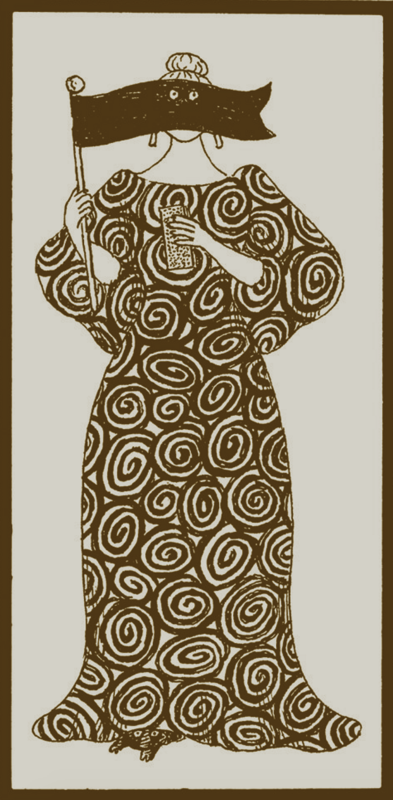
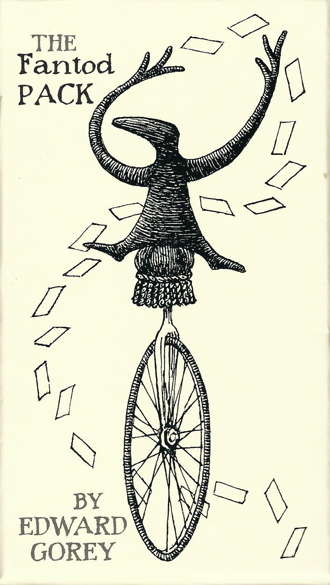

|  |
Madame Groeda WeyrdMadame Weyrd, who is of mixed Finnish and Egyptian extraction, has devoted her life to divination, and is the author of among a shelf of other works, Floating Tambourines, a collection of esoteric verse, and The Future Speaks Through Entrails. Her career as one of the most celebrated of trance mediums came to a close when she lost two and a third fingers as the result of a contretemps during an ectoplasmic manifestation. She has long since been persona non grata to many of the rich and famous because of her fearless predictions of disaster. She now makes her home on Staten Island (the one that is part of Tierra del Fuego) and is writing what is hoped may be the definitive treatise on the Mystic Bean. Of the Fantod Pack itself, Madame Weyrd will only say that its origin may not be divulged, but it is of incredible antiquity. |
About the GameThe center card represents and defines the basic situation in which you find yourself; the card above, something from the past that continues to affect your future; the card on the left, your inner self; the card on the right, the outer world. The lowest card symbolizes something about to come into being in the near future. Before passing to the meanings of the individual cards, a few general remarks may not be amiss. Interpretation must always depend on the character and circumstances of the person consulting the pack. What might portend a wipe-out for a teenage hot-dogger at Yokohama, might warn an octogenarian spinster in Minot, North Dakota, of a fall in a bathtub, though, of course, the results might come to much the same thing. The day of the week or month of the year given for each card should prove particularly calamitous. The meanings given are selective rather than exhaustive, and hints rather than assertions. Lastly, you must rely on your own temerity and "imagination of disaster" (Henry James) to gain the full meanings of the cards in combination. |
 |
Anabel Ramirez: GitHub
Favorite Scary Movie: May
Is Afraid Of: People
Marilyn Carlin: GitHub
Favorite Scary Movie: Scream
Is Afraid Of: Heights
Halle Tempest: GitHub
Favorite Scary Movie: Alien
Is Afraid Of: Snakes
Kristen McKee: GitHub
Favorite Scary Movie: The Exorcist
Is Afraid Of: Clowns
Karina Roush: GitHub
Favorite Scary Movie: The Shining
Is Afraid Of: Gorillas
Edward Gorey's The Fantod Pack, made up of twenty cards and in interpretive booklet, was originally published in 1995 by Gotham Book Mart, Inc, New York Ciity. An Edward Gorey licensed product @2007 The Edward Gorey Charitable Trust.